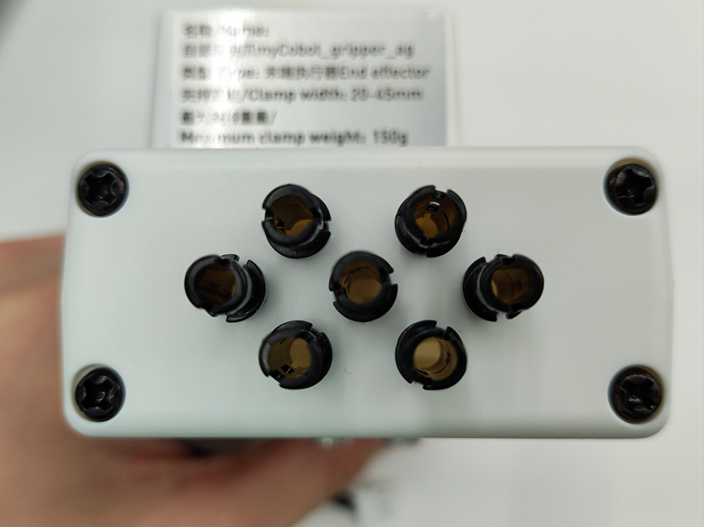
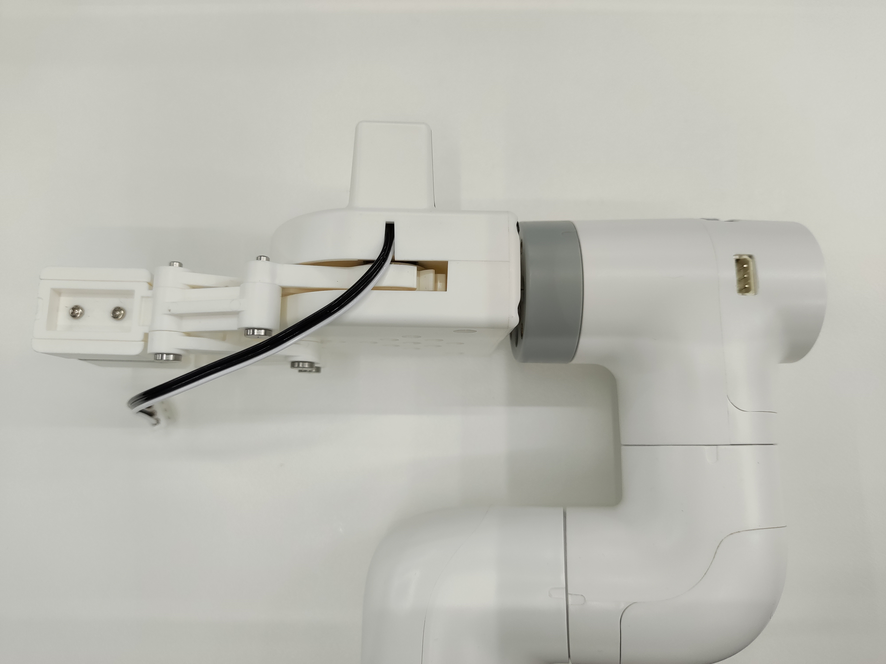
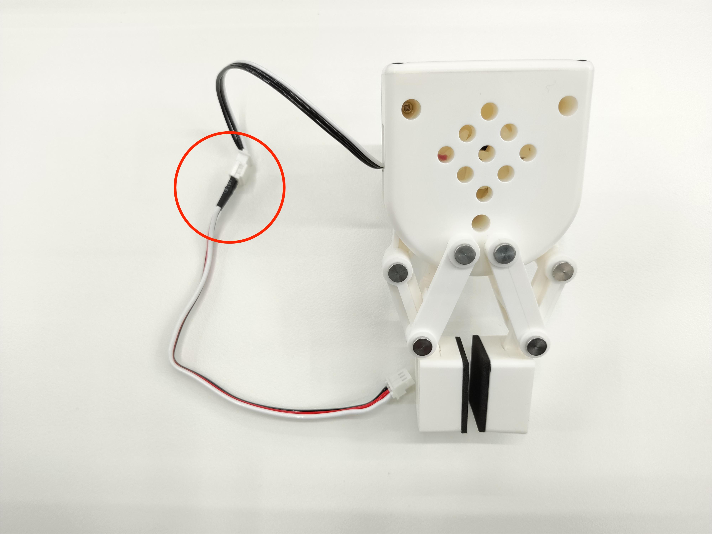
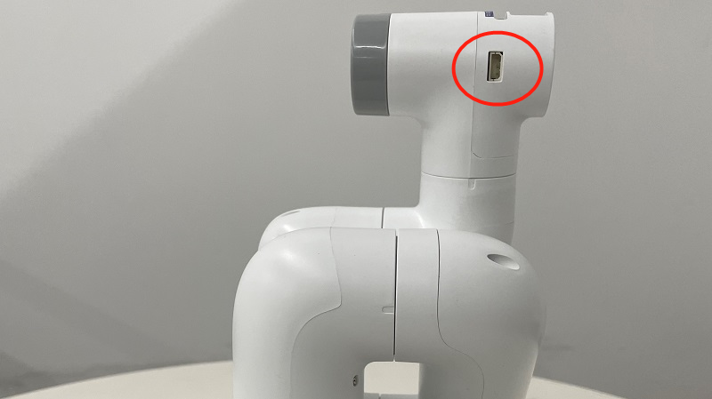
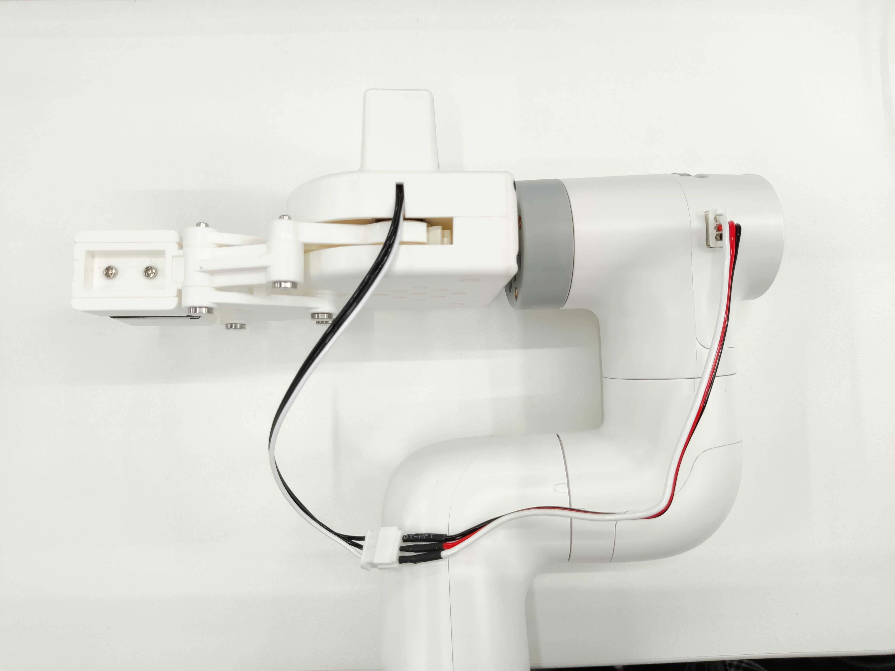
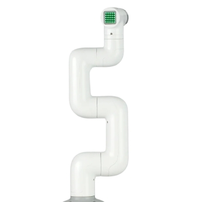
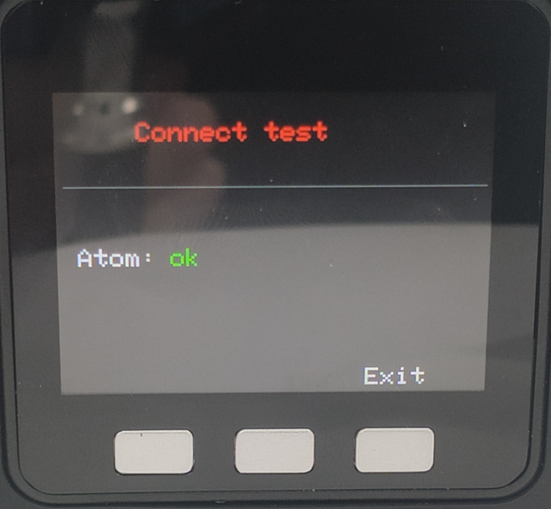
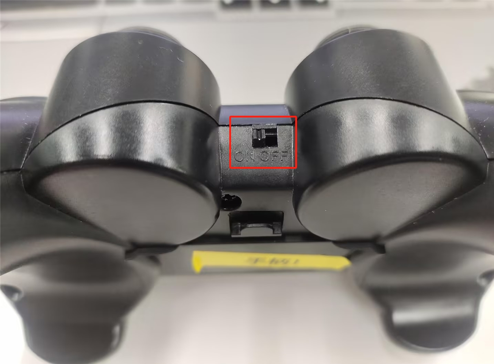
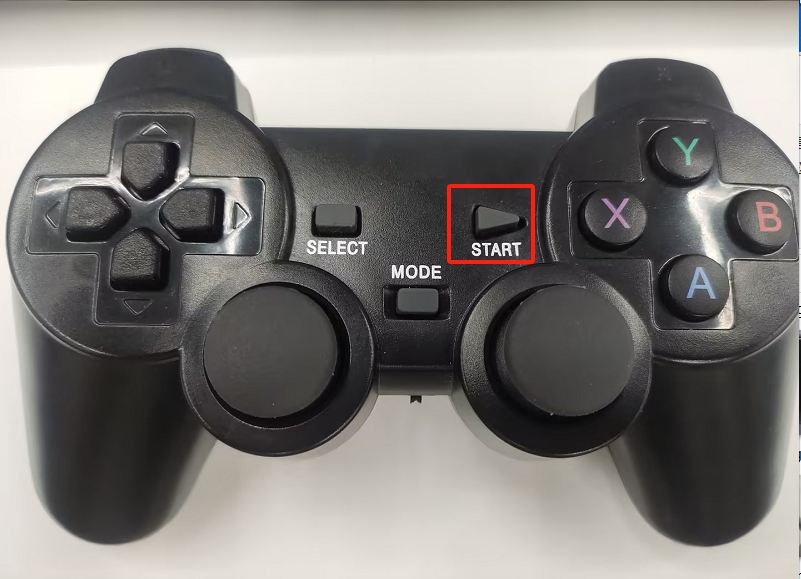

280M5 手柄遥控案例
功能说明：使用游戏手柄控制机器人进行坐标运动和夹爪开合
1 夹爪安装
将乐高连接件插入夹爪预留的插孔中

将插好连接件的夹爪对准机械臂末端插孔插入

将延长线与夹爪连接

插入机械臂控制接口


2 夹爪测试
from pymycobot import MyCobot280,utils
import time
arm=MyCobot280(utils.get_port_list()[0])
for i in range(2):
arm.set_gripper_state(1,100)#夹爪夹紧
time.sleep(1)
arm.set_gripper_state(0,100)#夹爪张开
time.sleep(1)
3 手柄功能说明
注意：手柄需要单独购买，详情请咨询官方客服
将手柄的接收器插到电脑上
| 按键 | 功能 |
|---|---|
| 按住方向键↑ | RY正方向运动 |
| 按住方向键↓ | RY负方向运动 |
| 按住方向键← | RX正方向运动 |
| 按住方向键→ | RX负方向运动 |
| 推动左摇杆↑ | X正方向运动 |
| 推动左摇杆↓ | X负方向运动 |
| 推动左摇杆← | Y正方向运动 |
| 推动左摇杆→ | Y负方向运动 |
| 推动右摇杆↑ | Z正方向运动 |
| 推动右摇杆↓ | Z负方向运动 |
| 推动右摇杆← | RZ正方向运动 |
| 推动右摇杆→ | RZ负方向运动 |
| 按下X键 | 夹爪张开 |
| 按下Y键 | 夹爪闭合 |
| 按下A键 | 开启吸泵 |
| 按下B键 | 停止吸泵 |
注意事项：部分手柄按键并未使用到，因此不会对机械臂产生任何效果；更加具体的按键使用请查看 手柄控制使用
注意事项：部分手柄按键并未使用到，因此不会对机械臂产生任何效果
4 手柄依赖库安装
打开终端，输入下面命令，进行手柄驱动库安装
pip install pygame
5 准备工作
在接入12V电源前，可手动将机械臂调成下图零位姿态，然后在进入12V电源和通信数据线，机械臂周围不要有杂物，避免发生碰撞

注意机械臂的座屏幕要显示ok

将手柄的开关打开

注意手柄的MODE LED有没有亮
注意：只有MODE LED亮灯，才可以控制机械臂，如果手柄长时间不使用会进入待机状态，可以按一下手柄的START按键进行激活

6 案例程序
# coding:utf-8
import pygame
import sys
import time
from pymycobot import MyCobot280
import platform
import threading
if "linux" in platform.platform().lower():
import RPi.GPIO as GPIO
# Set GPIO mode
GPIO.setmode(GPIO.BCM)
# Set pin 20 (electromagnetic valve) and pin 21 (release valve) as output
GPIO.setup(20, GPIO.OUT)
GPIO.setup(21, GPIO.OUT)
# Initialize MyCobot280 with serial port and baud rate
mc = MyCobot280('com3', 115200)
init_angles = [0, 0, -90, 0, 0, 0]
go_home = [0, 0, 0, 0, 0, 0]
# Initialize Pygame and joystick modules
pygame.init()
pygame.joystick.init()
button_pressed = False
hat_pressed = False
previous_state = [0, 0, 0, 0, 0, 0]
# Function to turn on the vacuum pump (electromagnetic valve)
def pump_on():
# 打开电磁阀
if platform.system() == "Linux":
GPIO.output(20, 0)
elif platform.system() == "Windows":
mc.set_basic_output(5, 0)
time.sleep(0.05)
# Function to turn off the vacuum pump (close electromagnetic valve and open release)
def pump_off():
if platform.system() == "Linux":
# Close valve
GPIO.output(20, 1)
time.sleep(0.05)
# Open release valve
GPIO.output(21, 0)
time.sleep(1)
GPIO.output(21, 1)
time.sleep(0.05)
elif platform.system() == "Windows":
# Close valve
mc.set_basic_output(5, 1)
time.sleep(0.05)
# Open release valve
mc.set_basic_output(2, 0)
time.sleep(1)
mc.set_basic_output(2, 1)
time.sleep(0.05)
# Function to safely stop the robot (used in a thread)
def safe_stop():
try:
mc.stop()
time.sleep(0.02)
except Exception as e:
print("stop 出错：", e)
previous_state[axis] = 0
# Handler for joystick input events
def joy_handler():
global button_pressed
global hat_pressed
global previous_state
# Joystick axis movement (analog stick)
if event.type == pygame.JOYAXISMOTION:
axis = event.axis
value = round(event.value, 2)
if abs(value) > 0.1:
flag = True
previous_state[axis] = value
# jog_coord(index, direction, speed)
# direction: 0 = negative direction, 1 = positive direction
if axis == 0 and value == -1.00:
mc.jog_coord(2, 1, 50)
elif axis == 0 and value == 1.00:
mc.jog_coord(2, 0, 50)
if axis == 1 and value == 1.00:
mc.jog_coord(1, 0, 50)
elif axis == 1 and value == -1.00:
mc.jog_coord(1, 1, 50)
if axis == 3 and value == 1.00:
mc.jog_coord(6, 1, 50)
elif axis == 3 and value == -1.00:
mc.jog_coord(6, 0, 50)
if axis == 4 and value == 1.00:
mc.jog_coord(3, 0, 50)
elif axis == 4 and value == -1.00:
mc.jog_coord(3, 1, 50)
# Axis 2 for servo release
elif axis == 2 and value == 1.00:
mc.release_all_servos()
time.sleep(0.03)
# Axis 5 to power on
elif axis == 5 and value == 1.00:
mc.power_on()
time.sleep(0.03)
else:
if previous_state[axis] != 0:
# mc.stop()
threading.Thread(target=safe_stop).start()
previous_state[axis] = 0
# Joystick button pressed
elif event.type == pygame.JOYBUTTONDOWN:
if joystick.get_button(2) == 1:
mc.set_gripper_state(0, 100)
elif joystick.get_button(3) == 1:
mc.set_gripper_state(1, 100)
elif joystick.get_button(0) == 1:
pump_on()
elif joystick.get_button(1) == 1:
pump_off()
elif joystick.get_button(5) == 1:
mc.send_angles(init_angles, 50)
time.sleep(2)
elif joystick.get_button(4) == 1:
mc.send_angles(go_home, 50)
time.sleep(3)
# D-Pad (HAT) movement
elif event.type == pygame.JOYHATMOTION:
hat_value = joystick.get_hat(0)
if hat_value == (0, -1):
mc.jog_coord(4, 0, 50)
elif hat_value == (0, 1):
mc.jog_coord(4, 1, 50)
elif hat_value == (-1, 0):
mc.jog_coord(5, 0, 50)
elif hat_value == (1, 0):
mc.jog_coord(5, 1, 50)
if hat_value != (0, 0):
hat_pressed = True
else:
if hat_pressed:
# mc.stop()
threading.Thread(target=safe_stop).start()
hat_pressed = False
# Initialize joystick if detected
if pygame.joystick.get_count() > 0:
joystick = pygame.joystick.Joystick(0)
joystick.init()
else:
print("没有检测到手柄")
pygame.quit()
sys.exit()
# Main loop to process events
running = True
while running:
for event in pygame.event.get():
if event.type == pygame.QUIT:
running = False
joy_handler()
pygame.quit()
7 效果展示